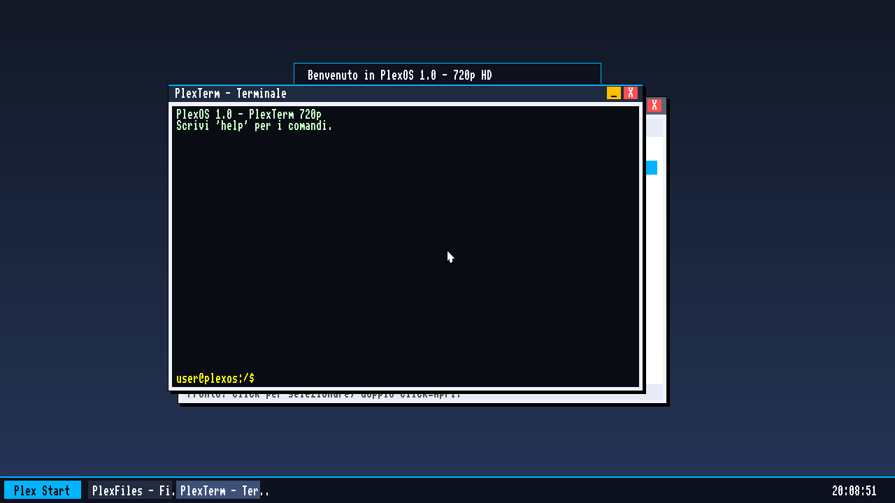
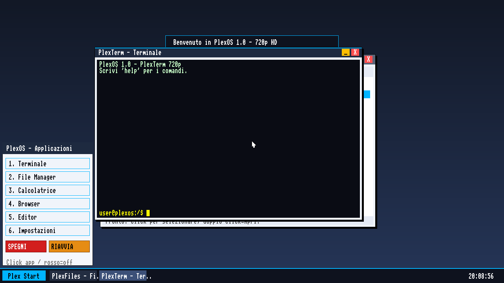
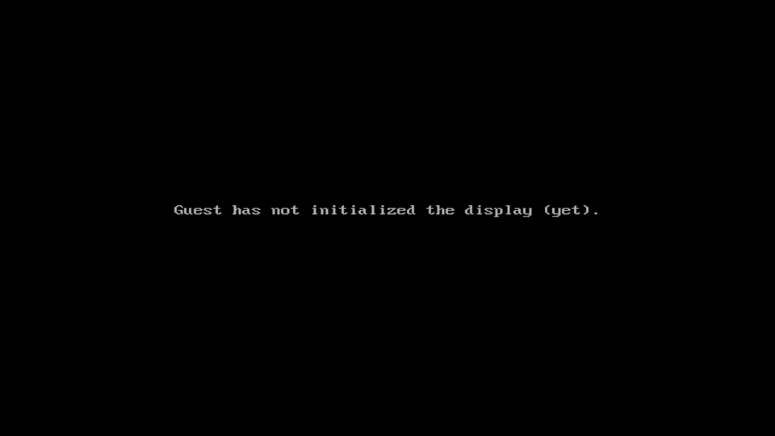

PlexOS
Kernel 32-bit
Multiboot + UEFI
GUI 60 FPS
~70 commands
6 apps
scroll
No borrowed kernel, no Linux underneath. PlexOS is raw code: the boot stub, the drivers, the window manager, the shell — all hand-written.
Multiboot for BIOS and Multiboot2 for UEFI, GDT/IDT setup, physical memory manager, PSE paging, kernel heap.
Double-buffered rendering with vsync: desktop, resizable windows, taskbar and an animated Start menu.
VBE & Bochs dispi video, PS/2 keyboard/mouse, ATA PIO disk, PCI, RTC clock, PIT timer — and Intel e1000 networking.
Detects the real CPU: SSE, PAT write-combining, TSC timing — tuned profile for the Intel Core i3-1115G4 / UHD G4.
A filesystem with a memory partition and ATA disk, plus a shell with 70+ commands and history.
For real hardware: full-screen color stages and up to 11 CAPS LOCK blink codes to trace the boot.
A real shell, right there on the desktop.
Launch them from the Start menu — click the icon top-left, or press F10 then 1–6.
The system shell with ANSI output, history and 70+ commands.
Browse, create and delete files and folders in the VFS.
Expression engine: 2*(3+4)^2 — click buttons or type.
Offline PlexNet pages: home, apps, command guide, about.
Full-screen text editor that saves straight into the filesystem.
Tabs for system info, network on/off and light/dark/blue themes.
Rendered by PlexOS itself.



Latest release, pulled live from GitHub.